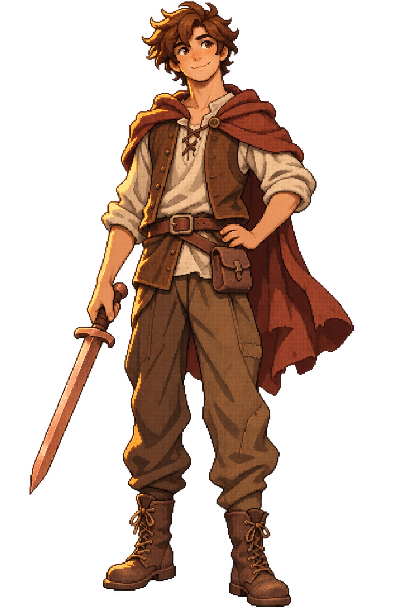

Kalys al comienzo · Concepto visualEl comienzo está en casa
Kalys
De Kelus. De casa.
Hacia lo desconocido.
Kalys tiene dieciocho años y es un joven campesino de Kelus. Su aventura comienza en casa, con una camisa cruda, un chaleco de cuero marrón, una capa rojiza y la espada de cobre que le ha regalado su padre, Cortus. Su madre es Maris y Markus es su tío materno. Ese entorno familiar da al protagonista un punto de partida cercano, desde el que descubrir Archilium y afrontar lo que encuentre en el camino.
- Edad
- 18 años
- Origen
- Kelus
- Arma inicial
- Espada de cobre